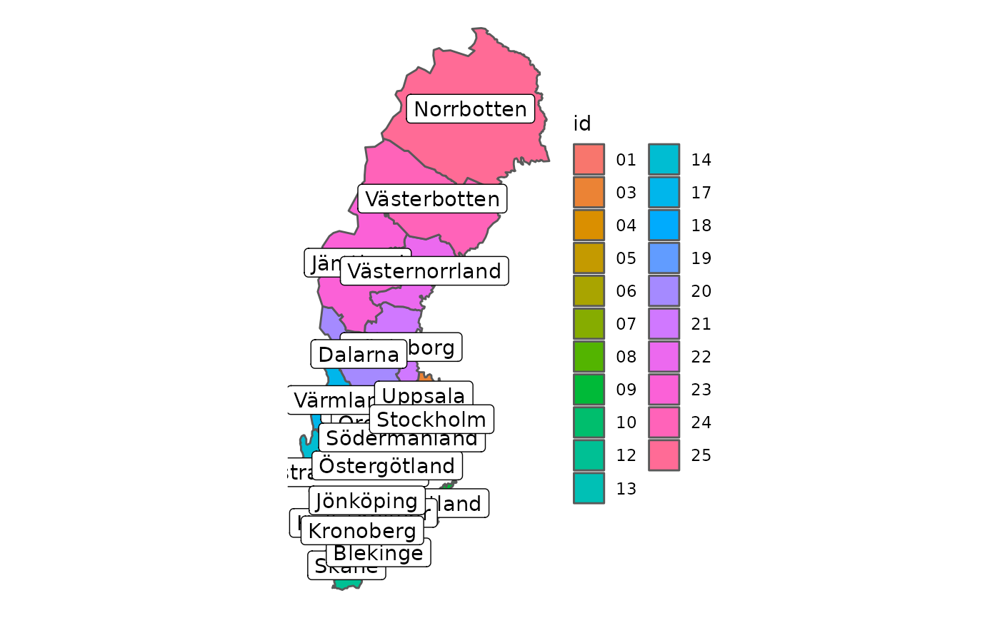
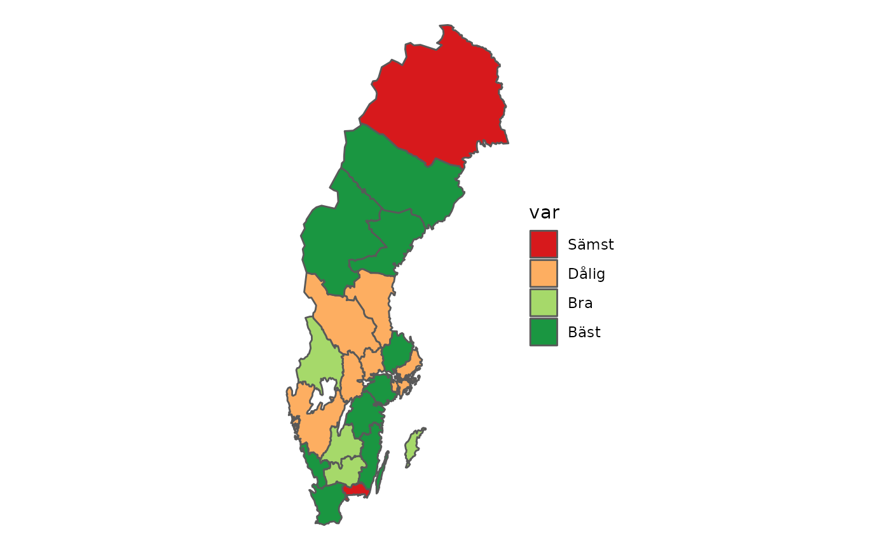
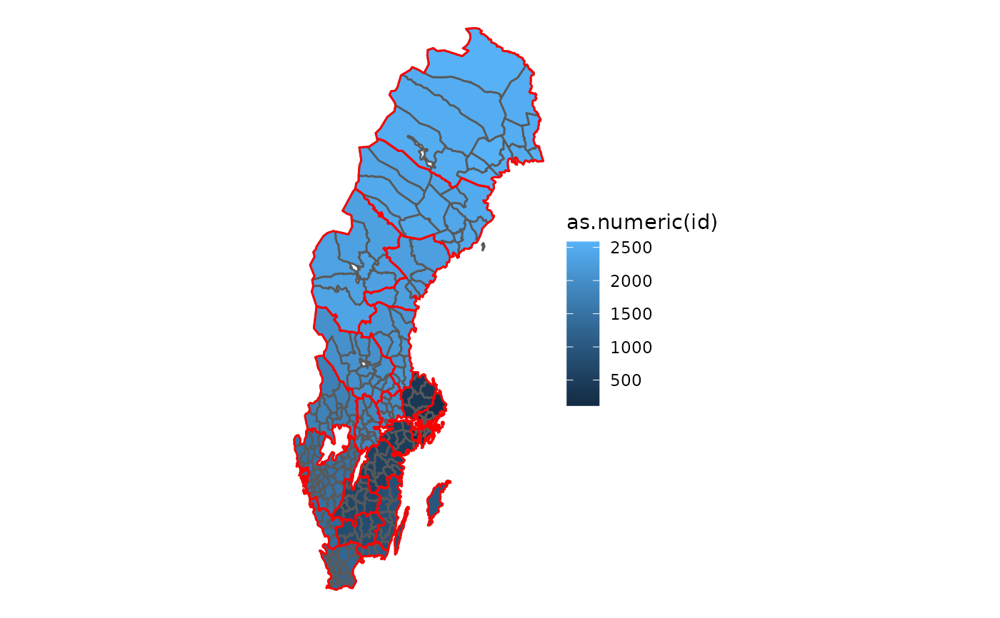
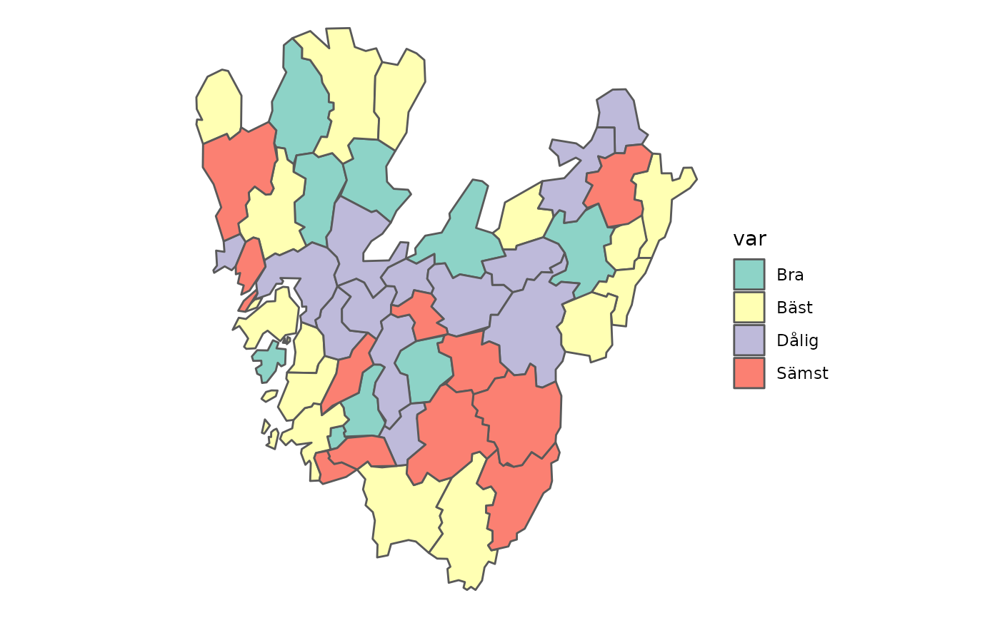
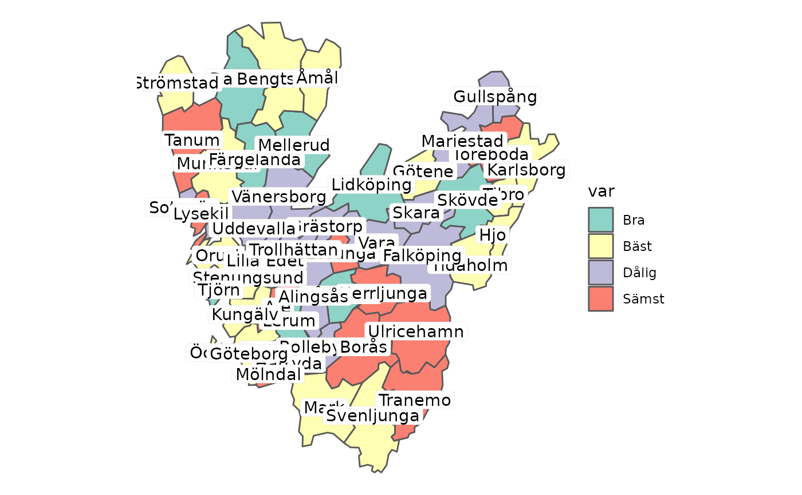

Plot map using geom_sf
data.frame map data. One column should be named "geometry" containing map coordinates for regions to map.
Variable to use for colouring regions
Variable to use label names
Manually set colors
Manually set labels, character vector.
Manually set legend breaks
Number of rows in legend
Number of cols in legend
ggplot object with map figure
# Use internal coordinate datasets
region_coords <- counties
municip_coords <- municipalities
# Map with labels
data <- region_coords %>%
dplyr::mutate(
labels = paste0(id, " - ", Name)
)
map_plot(
df = data,
fill_var = "labels",
label_var = "id",
fill_colors = c(RColorBrewer::brewer.pal(12, "Set3"),
RColorBrewer::brewer.pal(9, "Spectral"))
)
#> Warning: st_point_on_surface may not give correct results for longitude/latitude data

# Add some "interresting" data to coordinate dataset and plot
region_coords[["var"]] <- factor(sample(c("Sämst", "Dålig", "Bra", "Bäst"),
size = 21, replace = TRUE),
ordered = TRUE,
levels = c("Sämst", "Dålig", "Bra", "Bäst")
)
map_plot(
df = region_coords,
fill_var = "var",
fill_colors = rc_colors(n = 4, type = "RYG")
)

# Plot both municipalities and region outlines
ggplot2::ggplot() +
ggplot2::geom_sf(data = municipalities, ggplot2::aes(fill = as.numeric(id))) +
ggplot2::geom_sf(data = counties, fill = NA, color = "red") +
ggplot2::theme_void()

# Plot municipalities of Västra Götalands Län, with and without labels
vgregion <- dplyr::filter(municipalities, RegionID == "14")
vgregion[["var"]] <- sample(c("Bäst", "Bra", "Dålig", "Sämst"),
size = nrow(vgregion), replace = TRUE)
map_plot(
df = vgregion,
fill_var = "var"
)

map_plot(
df = vgregion,
fill_var = "var",
label_var = "Name"
)
#> Warning: st_point_on_surface may not give correct results for longitude/latitude data
